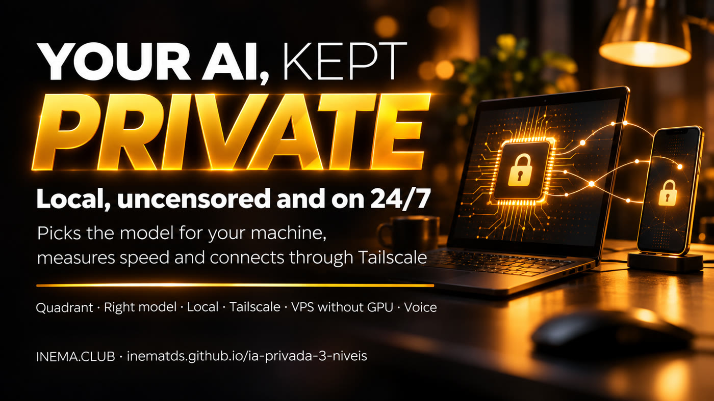

Your questions never leave your computer, and you can use it from your phone anywhere without opening a port to the internet.

This free kit lets you run an open AI model on your own computer without sending your data to any company. It is for people handling sensitive information (medical records, contracts, finances, logs) or who need a model that does not refuse legitimate tasks. One script checks your machine and recommends the best normal and uncensored models that fit. Another measures speed and checks that the port is closed. To use it from anywhere, the kit connects your devices through a private network (Tailscale). You need Python 3.10+, Ollama, and a free Tailscale account if you want to use it away from home.
You do not need a paid “agent operating system.” These are three open components and a few scripts that show everything works.
An uncensored model on another company's server. Quick to get started, but your prompt leaves your machine. It is in the companion kit Uncensored AI, the right way.
Ollama (free software that runs models on your computer) with the model that escolhe_modelo.py recommends for your memory. Nothing leaves your machine.
Tailscale creates a private network between your devices: your phone uses the GPU at home (Path A) or a small model on a VPS (Path B).
Can the data leave your machine? Does the normal model refuse what you need to do? Choose uncensored only when the normal model refuses a legitimate task.
python3 kit/scripts/quadrante.py --dado-sensivel sim --recusa nao # LOCAL NORMAL — when: exams, contracts, finances, logs... — how: level 2 of this kit
Same prompt, 160 response tokens (word fragments), measured with checa_local.py. Comfortable reading speed is around 10 tokens/s. The files for each measurement are in kit/verificacao/.
The differences between local and “over Tailscale” are run-to-run variation, not network cost.
Loading the model took 16 to 47 seconds on the VPS. It then stays in memory for 5 minutes and responds immediately.
The uncensored and normal models of the same size ran in the same speed range.
Everything is free, except for the Path B VPS if you choose that option.
The scripts use only the standard library. Mac and Linux include it; on Windows, get it from python.org.
python3 --versionRuns the models. Install on Linux with the command below; on Mac and Windows, use the installer at ollama.com/download.
curl -fsSL https://ollama.com/install.sh | shA private network between your devices, free for personal use. Install it at home and on your phone, using the same account.
curl -fsSL https://tailscale.com/install.sh | shRun the commands in the project folder. Prefer an assistant to do it for you? Each step has a ready-to-use prompt in kit/prompts/.
The tests do not use the internet or Ollama: they only check that the scripts work correctly.
git clone https://github.com/inematds/ia-privada-3-niveis.git cd ia-privada-3-niveis python3 -m unittest discover -s kit/testes -v # ends with OK
The script reads your memory (GPU memory, Mac unified memory, or RAM) and disk space. It shows two models and the command to download them, but does not download anything on its own.
python3 kit/scripts/escolhe_modelo.py # Best local (normal): Qwen 3.5 9B -> ollama pull qwen3.5:9b (6.6 GB) # Best local (uncensored): Qwen 3.5 9B -> ollama pull huihui_ai/qwen3.5-abliterated:9b (6.6 GB)
| Memory | Normal | Uncensored | Download |
|---|---|---|---|
| 8 GB | qwen3.5:4b | huihui_ai/qwen3.5-abliterated:4B | 3.3 GB |
| 16 GB | qwen3.5:9b | huihui_ai/qwen3.5-abliterated:9b | 6.6 GB |
| 24–32 GB | qwen3.8:27b | huihui_ai/Qwen3.8-abliterated:27b | 18 GB |
| 128 GB | qwen3.5:122b | huihui_ai/qwen3.5-abliterated:122B | 81 GB |
checa_local.py asks a question, measures speed, checks the port, and saves the result in kit/verificacao/.
ollama pull huihui_ai/qwen3.5-abliterated:9b python3 kit/scripts/checa_local.py --modelo huihui_ai/qwen3.5-abliterated:9b # Porta 11434 nesta maquina: loopback ['127.0.0.1'] # Velocidade: ... tokens/s
Type /bye to exit. Normal and uncensored models can stay downloaded side by side: to switch, just run a different model name.
ollama run huihui_ai/qwen3.5-abliterated:9b
Once logged in to Tailscale, publish Ollama only on your private network. The status should say “tailnet only.” If you see “Access denied,” run sudo tailscale set --operator=$USER once.
tailscale serve --bg --tcp 11434 tcp://127.0.0.1:11434 tailscale serve status # must show "tailnet only" tailscale ip -4 # the 100.x.y.z address to use on your phone
On your phone or laptop (with Tailscale on the same account), use http://100.x.y.z:11434 in any app that works with Ollama. To measure from there:
python3 kit/scripts/checa_local.py --base-url http://100.x.y.z:11434 --modelo huihui_ai/Qwen3.8-abliterated:27b --nome casa-pelo-tailscale
To turn it off: tailscale serve --tcp 11434 off.
For people who do not leave a computer running. A standard VPS has no GPU: up to 9B, at the speeds shown above. On an Ubuntu VPS with 8 GB or more:
curl -fsSL https://ollama.com/install.sh | sh ss -ltn | grep 11434 # só 127.0.0.1:11434 curl -fsSL https://tailscale.com/install.sh | sh tailscale up tailscale serve --bg --tcp 11434 tcp://127.0.0.1:11434 ollama pull huihui_ai/qwen3.5-abliterated:4B
Verify that it is closed: from your computer, http://<VPS public IP>:11434 should fail, while http://<VPS Tailscale IP>:11434 should respond. On the VPS, python3 kit/scripts/checa_local.py --so-porta shows tailscale.
The free Jarvis Local kit already supports fully local voice conversations. Add the sem_censura and casa entries from kit/config/jarvis-cerebros.exemplo.json to its brain shelf and say “switch to the uncensored brain.” Voice requires a GPU: on a Path B VPS, text only.
| Ready-to-use prompt | What the assistant does |
|---|---|
| 01 · Install and choose (in Portuguese) | Installs Ollama with your approval, runs the model selector, downloads your choice, and measures speed. |
| 02 · Home via Tailscale (in Portuguese) | Path A, checking for “tailnet only” and never using funnel. |
| 03 · Always-on VPS (in Portuguese) | Path B, with proof that the public port is closed. |
An abliterated model is an open model stripped of its refusal reflex. It answers almost anything, so the rules below serve as guardrails.
OLLAMA_HOST=0.0.0.0, open a port on your router, or use tailscale funnel. checa_local.py --so-porta reports aberto and exits with an error.